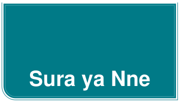

Uunguaji wa vitu hutokea katika maisha ya kila siku. Katika sura hii, utajifunza maana, sababu, na athari za uunguaji wa vitu. Pia, utajifunza mbinu mbalimbali za kujilinda na ajali zinazoweza kutokea kutokana na kuungua kwa vitu. Pia, utafanya majaribio sahili ya kuchunguza umuhimu wa hewa (gesi ya oksijeni) katika uunguaji wa vitu. Umahiri utakaoujenga utakuwezesha kuzalisha joto na mwanga kwa usalama kwa ajili ya matumizi mbalimbali. Vilevile, utaweza kujikinga na kuwakinga wengine na ajali zitokanazo na kuungua kwa vitu.

Uunguaji wa vitu ni mchakato unaotokea wakati vitu vyenye uwezo wa kuungua (Fueli) vinaungana na gesi ya oksijeni na kutoa joto na mwanga. Wakati wa mchakato wa uunguaji wa vitu, nishati hutolewa kwa njia ya joto na mwanga, ndiyo sababu unaona miali ya moto na kuhisi joto wakati kitu kinawaka. Kwa mfano, unapounguza kuni kwenye moto, kuni zinachanganyika na gesi ya oksijeni, na kutoa joto na mwanga. Mchakato huu wa